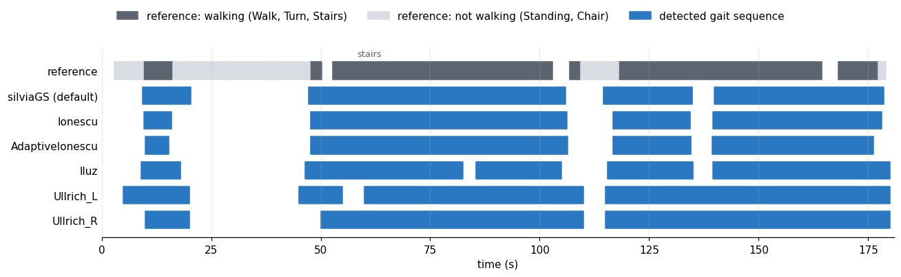
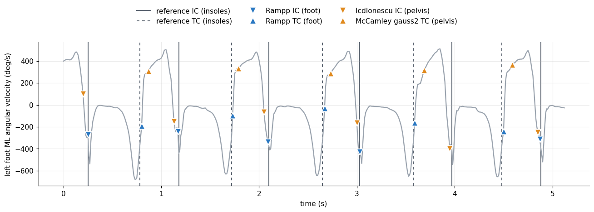

Biomechanical Validation for Neon-IMU-Analysis
This page shows the validation of our biomechanical pipeline which integrates different biomechanical principles.
Pipeline
Pupil Labs Neon glasses and three IMUs (pelvis, left and right foot) are calibrated and time-synchronised. The Neon data go to the Pupil Labs analysis; the IMU data go through gait-sequence, stride and gait-event detection, zero-velocity updates (ZUPT) and WGL CMP to the biomechanical metrics. In the validation the eye-tracking branch is greyed out (not validated here); the red boxes give the datasets each step is checked on.
Datasets
| dataset | sensors | participants | activities used | event reference |
|---|---|---|---|---|
| NEWBEE [2] | Xsens full-body suit (17 IMUs) and pressure insoles | 20 healthy adults, 18–69 years | 3 outdoor courses in an urban environment with different paths: level walking, curbs, ramps and stairs (60 trials) | insoles |
| WMCG [3] | IMUs and optical motion capture | 10 healthy adults, 21–29 years | level walking (slow, normal, fast) and stair walking (50 trials) | markers (Bonci et al.) |
| WearPD-Gait [4] | IMUs (13 Xsens) and pressure insoles; pressure walkway | older adults: Parkinson’s disease 67 ± 8 years, controls 74 ± 9 years (mean ± SD); walkway 99 participants with PD, free walking 55 (2 controls) | level walking on the pressure walkway (self-paced and hurried; 196 recordings) and free walking including stairs (55 recordings) | walkway (walkway walking), insoles (free walking) |
From each dataset we use the lower-back (pelvis) IMU and the two foot IMUs. Ages: NEWBEE and WearPD-Gait from their papers; WMCG from the dataset’s participant file (the paper gives 23.9 ± 2.9 years).
Reference data
Gait-sequence detection
WearPD-Gait [4]: the dataset’s activity labels, annotated frame by frame from synchronised video. Walking = Walk and Turn on the walkway, plus Stairs in free walking; not walking = Standing (and Chair in free walking). Frames with any other label (e.g. opening a door) or no label are not scored. NEWBEE [2]: every recording is continuous walking, so the whole recording is the reference walking period.
Event detection
The reference events come from pressure insoles where available: NEWBEE [2] and WearPD-Gait free walking [4] (insole total force > 20 N). For WearPD-Gait walkway walking, the reference is the pressure walkway.
For WMCG [3], the reference is marker-based event detection from Bonci et al. [5]: their variable-threshold (Ghoussayni, RWS) detector, run unchanged, with each participant’s average walking speed (mean of their normal-walking and stair-descent speeds).
We validated this marker-based detection on the dataset of Baetens et al. [6] (20 participants; level walking at three speeds, and stair ascent and descent step-over-step and step-by-step) against its Moticon insoles (total force > 20 N; events matched within ±250 ms). It found 80–98% of the insole events, with a mean absolute timing error of 23–63 ms for initial contacts (IC) and 34–73 ms for final contacts (FC):
| activity | IC events | IC found | IC MAE (ms) | FC events | FC found | FC MAE (ms) |
|---|---|---|---|---|---|---|
| Slow walking | 1197 | 95% | 42 | 1194 | 92% | 44 |
| Normal walking | 1087 | 98% | 23 | 1090 | 96% | 60 |
| Fast walking | 1068 | 89% | 24 | 1067 | 88% | 73 |
| Stair ascent (step-over-step) | 1518 | 96% | 49 | 1515 | 95% | 38 |
| Stair descent (step-over-step) | 1511 | 96% | 31 | 1513 | 96% | 53 |
| Stair ascent (step-by-step) | 2517 | 97% | 60 | 2517 | 97% | 34 |
| Stair descent (step-by-step) | 2493 | 80% | 63 | 2493 | 95% | 44 |
Metrics
Gait-sequence detection
Frame by frame, against the reference walking periods:
- Sensitivity: the percentage of reference walking time that lies inside a detected gait sequence.
- Specificity: the percentage of reference not-walking time that lies outside every detected gait sequence (WearPD-Gait only; NEWBEE has no not-walking time).
- Accuracy: the percentage of all scored time classified correctly (walking or not walking).
Event detection
- Matching. Each detected event is paired one-to-one with the nearest reference event of the same type (initial contact, IC; toe-off, TC), closest pairs first, within ±100 ms. The pelvis detectors do not say which foot an event belongs to, so all detectors are scored with both feet pooled.
- TP (true positive): a detected event paired with a reference event. FP (false positive): a detected event with no reference event within ±100 ms. FN (false negative): a reference event with no detected event.
- Found (recall): TP / (TP + FN), the percentage of reference events that were detected.
- MAE: mean absolute timing error (IMU − reference) over the TPs, in ms.
Results
Gait-sequence detection

Example: one WearPD-Gait free-walking recording (NLS193_control_FreeWalk). Top row: the reference labels (dark: walking; light: standing or chair; blank: not scored, e.g. opening a door). Rows below: the gait sequences of each detector.
| detector | NEWBEE | WearPD-Gait walkway | WearPD-Gait free walking | ||||
|---|---|---|---|---|---|---|---|
| sensitivity | sensitivity | specificity | accuracy | sensitivity | specificity | accuracy | |
| silviaGS (pipeline default) | 100% | 99% | 95% | 98% | 100% | 87% | 95% |
| Ionescu | 100% | 97% | 100% | 98% | 99% | 94% | 97% |
| AdaptiveIonescu | 80% | 94% | 100% | 95% | 91% | 98% | 94% |
| Iluz | 100% | 100% | 81% | 94% | 100% | 89% | 96% |
| Ullrich_L | 98% | 86% | 93% | 82% | 92% | 83% | 89% |
| Ullrich_R | 98% | 88% | 91% | 82% | 93% | 87% | 89% |
NEWBEE: pooled over all recordings. WearPD-Gait: median over recordings.
Event detection

Example: five gait cycles of level walking from NEWBEE (trial id02_courseC). Signal: left-foot ML angular velocity. Vertical lines: insole reference for the left foot (solid IC, dashed TC). Markers: detected events, drawn on the signal — foot: Rampp on the Roth 2021 stride list; pelvis: IcdIonescu (IC) and McCamley gauss2 (TC) inside the silviaGS gait sequences. The pelvis does not say which foot an event belongs to, so only the pelvis events whose nearest reference event is a left-foot one are shown.
See below for expanded set of results.
Foot detectors (Rampp, Herzer, Roth) on the Roth 2021 stride list; pelvis detectors (IcdIonescu, IcdShinImproved, McCamley with the gauss1 or gauss2 wavelet and IC found at zero crossings (zc) or peaks; its TC does not depend on zc / peaks) inside the gait sequences of silviaGS. Each cell: % of reference events found (MAE in ms).
NEWBEE
| detector | sensor | event | by activity | level walking, by position | |||||||
|---|---|---|---|---|---|---|---|---|---|---|---|
| overall | level walking | ramps | stairs up | stairs down | curbs | first/last step | turning | straight | |||
| Rampp | feet | IC | 97% (30) | 98% (29) | 100% (29) | 94% (33) | 71% (37) | 98% (26) | 2% (18) | 97% (28) | 99% (29) |
| Herzer | feet | IC | 94% (39) | 93% (40) | 95% (39) | 94% (34) | 92% (39) | 95% (38) | 2% (20) | 93% (40) | 94% (40) |
| Roth | feet | IC | 37% (59) | 35% (60) | 33% (62) | 48% (53) | 60% (55) | 46% (54) | 0% | 36% (59) | 35% (60) |
| IcdIonescu | pelvis | IC | 86% (49) | 88% (51) | 88% (45) | 69% (53) | 78% (43) | 89% (54) | 23% (37) | 87% (51) | 89% (51) |
| IcdShinImproved | pelvis | IC | 78% (54) | 80% (57) | 82% (50) | 56% (56) | 59% (45) | 72% (57) | 34% (45) | 77% (56) | 81% (57) |
| McCamley gauss1 (zc) | pelvis | IC | 70% (60) | 69% (65) | 73% (56) | 55% (57) | 83% (44) | 67% (63) | 20% (61) | 68% (64) | 70% (65) |
| McCamley gauss2 (zc) | pelvis | IC | 4% (58) | 1% (75) | 2% (91) | 13% (51) | 47% (53) | 2% (85) | 2% (72) | 2% (69) | 0% (83) |
| McCamley gauss2 (peaks) | pelvis | IC | 6% (82) | 5% (83) | 5% (86) | 18% (76) | 12% (80) | 3% (79) | 0% (20) | 5% (76) | 5% (85) |
| Rampp | feet | TC | 94% (34) | 96% (33) | 97% (34) | 82% (46) | 76% (31) | 96% (30) | 0% | 95% (32) | 96% (33) |
| Herzer | feet | TC | 90% (50) | 90% (50) | 90% (49) | 90% (49) | 88% (45) | 92% (51) | 0% | 90% (50) | 91% (51) |
| Roth | feet | TC | 91% (45) | 91% (45) | 92% (44) | 90% (48) | 87% (47) | 92% (49) | 0% | 91% (46) | 92% (45) |
| McCamley gauss1 (zc) | pelvis | TC | 7% (77) | 3% (86) | 10% (83) | 6% (70) | 30% (58) | 4% (82) | 0% (100) | 4% (84) | 3% (86) |
| McCamley gauss2 (zc) | pelvis | TC | 66% (58) | 71% (60) | 63% (57) | 74% (47) | 33% (67) | 62% (66) | 41% (53) | 65% (61) | 72% (60) |
| McCamley gauss2 (peaks) | pelvis | TC | 66% (58) | 71% (60) | 63% (57) | 74% (47) | 33% (67) | 62% (66) | 41% (53) | 65% (61) | 72% (60) |
WMCG
| detector | sensor | event | by activity | level walking, by position | ||||||
|---|---|---|---|---|---|---|---|---|---|---|
| overall | level walking | stairs up | stairs down | stair trials, level parts | first/last step | turning | straight | |||
| Rampp | feet | IC | 70% (38) | 83% (28) | 75% (67) | 30% (61) | 48% (55) | 8% (23) | 90% (32) | 100% (21) |
| Herzer | feet | IC | 77% (22) | 81% (15) | 84% (40) | 78% (29) | 53% (35) | 8% (13) | 88% (16) | 99% (12) |
| Roth | feet | IC | 11% (36) | 9% (41) | 15% (28) | 17% (31) | 11% (35) | 2% (50) | 11% (39) | 6% (48) |
| IcdIonescu | pelvis | IC | 84% (44) | 88% (47) | 95% (38) | 96% (31) | 52% (51) | 85% (41) | 86% (47) | 95% (47) |
| IcdShinImproved | pelvis | IC | 75% (50) | 75% (55) | 89% (52) | 95% (28) | 46% (49) | 69% (54) | 73% (54) | 82% (57) |
| McCamley gauss1 (zc) | pelvis | IC | 76% (50) | 80% (60) | 90% (38) | 97% (24) | 35% (41) | 78% (57) | 77% (60) | 89% (63) |
| McCamley gauss2 (zc) | pelvis | IC | 11% (54) | 6% (55) | 2% (70) | 6% (75) | 40% (50) | 2% (65) | 10% (55) | 0% |
| McCamley gauss2 (peaks) | pelvis | IC | 2% (66) | 2% (62) | 0% | 1% (95) | 7% (67) | 0% | 3% (62) | 0% |
| Rampp | feet | TC | 60% (34) | 79% (32) | 13% (44) | 47% (49) | 37% (32) | 2% (30) | 87% (34) | 96% (27) |
| Herzer | feet | TC | 69% (47) | 79% (52) | 87% (49) | 49% (18) | 34% (37) | 1% (60) | 89% (50) | 94% (56) |
| Roth | feet | TC | 71% (42) | 80% (45) | 88% (54) | 53% (15) | 42% (34) | 2% (30) | 89% (44) | 92% (47) |
| McCamley gauss1 (zc) | pelvis | TC | 3% (77) | 3% (72) | 0% (60) | 9% (85) | 1% (73) | 6% (77) | 3% (68) | 2% (82) |
| McCamley gauss2 (zc) | pelvis | TC | 57% (47) | 68% (50) | 96% (29) | 28% (63) | 8% (48) | 56% (49) | 67% (49) | 78% (52) |
| McCamley gauss2 (peaks) | pelvis | TC | 57% (47) | 68% (50) | 96% (29) | 28% (63) | 8% (48) | 56% (49) | 67% (49) | 78% (52) |
WearPD-Gait: walkway
| detector | sensor | event | by activity | level walking, by position | |||
|---|---|---|---|---|---|---|---|
| overall | walking | turns | first/last step | straight | |||
| Rampp | feet | IC | 81% (39) | 85% (37) | 73% (43) | 78% (35) | 98% (40) |
| Herzer | feet | IC | 78% (20) | 80% (19) | 73% (22) | 74% (18) | 92% (21) |
| Roth | feet | IC | 29% (35) | 31% (35) | 26% (33) | 31% (36) | 31% (35) |
| IcdIonescu | pelvis | IC | 78% (38) | 89% (35) | 55% (47) | 89% (35) | 87% (34) |
| IcdShinImproved | pelvis | IC | 69% (41) | 80% (39) | 48% (49) | 77% (40) | 86% (35) |
| McCamley gauss1 (zc) | pelvis | IC | 77% (41) | 86% (39) | 60% (46) | 83% (40) | 92% (37) |
| McCamley gauss2 (zc) | pelvis | IC | 30% (58) | 22% (63) | 49% (54) | 18% (67) | 29% (59) |
| McCamley gauss2 (peaks) | pelvis | IC | 7% (62) | 3% (73) | 16% (59) | 2% (70) | 5% (75) |
| Rampp | feet | TC | 80% (12) | 85% (10) | 71% (18) | 79% (10) | 99% (10) |
| Herzer | feet | TC | 78% (63) | 84% (62) | 67% (65) | 78% (61) | 96% (63) |
| Roth | feet | TC | 80% (60) | 85% (59) | 71% (64) | 80% (58) | 96% (60) |
| McCamley gauss1 (zc) | pelvis | TC | 9% (64) | 6% (65) | 13% (64) | 6% (70) | 7% (57) |
| McCamley gauss2 (zc) | pelvis | TC | 60% (59) | 71% (58) | 41% (59) | 69% (58) | 74% (59) |
| McCamley gauss2 (peaks) | pelvis | TC | 60% (59) | 71% (58) | 41% (59) | 69% (58) | 74% (59) |
WearPD-Gait: free walking
| detector | sensor | event | by activity | level walking, by position | |||||
|---|---|---|---|---|---|---|---|---|---|
| overall | walking | turns | stairs up | stairs down | first/last step | straight | |||
| Rampp | feet | IC | 90% (32) | 92% (32) | 74% (38) | 64% (37) | 65% (44) | 77% (31) | 94% (32) |
| Herzer | feet | IC | 89% (27) | 90% (27) | 81% (34) | 79% (30) | 85% (28) | 70% (28) | 93% (27) |
| Roth | feet | IC | 25% (46) | 25% (46) | 32% (42) | 27% (51) | 31% (44) | 25% (46) | 25% (46) |
| IcdIonescu | pelvis | IC | 86% (36) | 87% (36) | 66% (44) | 77% (45) | 74% (45) | 80% (40) | 88% (35) |
| IcdShinImproved | pelvis | IC | 85% (40) | 86% (39) | 55% (50) | 67% (46) | 71% (44) | 72% (45) | 88% (39) |
| McCamley gauss1 (zc) | pelvis | IC | 86% (44) | 87% (44) | 63% (39) | 66% (44) | 75% (43) | 77% (47) | 89% (44) |
| McCamley gauss2 (zc) | pelvis | IC | 17% (59) | 17% (60) | 31% (55) | 18% (57) | 19% (55) | 18% (64) | 17% (59) |
| McCamley gauss2 (peaks) | pelvis | IC | 4% (62) | 3% (60) | 12% (67) | 5% (73) | 7% (72) | 4% (62) | 3% (60) |
| Rampp | feet | TC | 83% (34) | 85% (34) | 68% (36) | 59% (37) | 52% (39) | 71% (34) | 87% (34) |
| Herzer | feet | TC | 59% (61) | 59% (61) | 52% (60) | 45% (60) | 51% (54) | 45% (60) | 62% (61) |
| Roth | feet | TC | 64% (59) | 65% (59) | 56% (61) | 48% (65) | 54% (61) | 54% (58) | 66% (59) |
| McCamley gauss1 (zc) | pelvis | TC | 4% (60) | 4% (61) | 5% (70) | 6% (37) | 10% (64) | 4% (57) | 3% (62) |
| McCamley gauss2 (zc) | pelvis | TC | 72% (49) | 74% (49) | 42% (45) | 66% (50) | 62% (53) | 60% (46) | 75% (49) |
| McCamley gauss2 (peaks) | pelvis | TC | 72% (49) | 74% (49) | 42% (45) | 66% (50) | 62% (53) | 60% (46) | 75% (49) |
Overall = all reference events of the activities shown (WearPD-Gait: standing and chair transfers not included). NEWBEE ramps and curbs pool up and down; WMCG level walking pools the three speeds.
Stairs up / down. NEWBEE: its walk_mode labels. WMCG: the OpenSim centre of mass rising or falling faster than 0.1 m/s over ±0.5 s around the event (slower = level parts of the stair trials, e.g. landings). WearPD-Gait: each Stairs label covers one ascent and one descent of the same small staircase (dataset supplement, Table S3), so its events before the middle reference IC are up and the rest down.
Level walking by position. First/last step: the first and last event of each foot in a walking bout (NEWBEE and WMCG: the trial, i.e. starting and stopping; WearPD-Gait: each Walk label, i.e. the steps next to a turn or a stop). Turning (NEWBEE and WMCG): NEWBEE’s curve and turn-around labels; for WMCG the OpenSim centre-of-mass heading changing faster than 30°/s within ±0.3 s of the event, or the centre of mass slower than 0.3 m/s (turn-around). In WearPD-Gait turns are labelled separately (the turns column). Straight: all other level-walking events.
References
- Castellaz, Wouda & van Beijnum. Estimating 3D Ground Reaction Forces During Daily Activities: A Reduced Sensor Setup and Virtual Pivot Point Approach. IEEE Transactions on Neural Systems and Rehabilitation Engineering 33 (2025).
- Losing & Hasenjäger. A Multi-Modal Gait Database of Natural Everyday-Walk in an Urban Environment. Scientific Data 9, 473 (2022).
- Hossain et al. A Wearable Motion Capture Dataset for Gait Analysis Using IMUs and Shank-Mounted Egocentric Cameras. Scientific Data 13, 1477 (2026).
- Anderson et al. WearGait-PD: An Open-Access Wearables Dataset for Gait in Parkinson’s Disease and Age-Matched Controls. Scientific Data 13, 440 (2026).
- Bonci et al. An Algorithm for Accurate Marker-Based Gait Event Detection in Healthy and Pathological Populations During Complex Motor Tasks. Frontiers in Bioengineering and Biotechnology 10, 868928 (2022).
- Baetens, Turcksin, Loccufier, Chevalier & Verstraten. Kinematic, kinetic, EMG and pressure data for daily life locomotion activities. Figshare+ (2026), dataset.